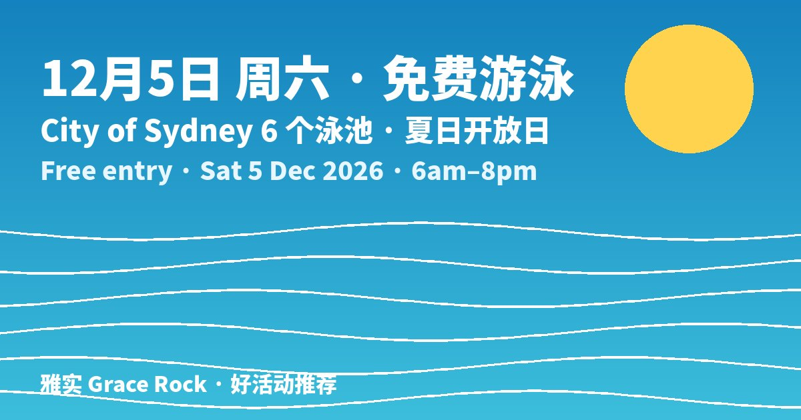

🏊 Free swim at 6 pools · Sat 5 Dec
City of Sydney Summer Open Day · 6am – 8pm
Once a year, all six City of Sydney pools are free all day, with ice baths, outdoor yoga, DJs and free health checks. I've been to five of the six. They're listed below in my order of preference. Tap one for details, or filter by what matters to you.

Event details
Free entry to all six City of Sydney pools and fitness centres all day
What matters most to you? (tap to filter)
Indoor and heated, with a sauna and steam room, and a car park right underneath.
♨️ Sauna🏠 Indoor🅿️ Easier parking🚋 Light railDetails · share this pool › 🚶Prince Alfred Park PoolSurry Hills · next to Central · OutdoorClosest to Grace · walking distanceOutdoor 50m pool right next to Central Station. Easiest by train.
☀️ Outdoor🚆 Near a train station🚋 Light rail🛝 Great for kidsDetails · share this pool › 🛝Gunyama Park Aquatic and Recreation CentreZetland · Indoor + outdoorKids' favourite · indoor and outdoorIndoor kids' water play with slides and fountains, plus a big outdoor pool. Great for families.
🛝 Great for kids🏠 Indoor☀️ Outdoor🅿️ Easier parkingDetails · share this pool › 🎓Victoria Park PoolCamperdown · next to Sydney Uni · OutdoorNext to Sydney Uni · lunchtime swimOutdoor 50m pool beside the University of Sydney, with a free 2-hour car park.
☀️ Outdoor🅿️ Easier parking🛝 Great for kidsDetails · share this pool › 🌊Cook + Phillip Park PoolCBD · beside Hyde Park · IndoorWave pool · our family's beenIndoor pool in the CBD, with a wave machine in the leisure pool and an indoor sports court.
🛝 Great for kids🏠 Indoor🌊 Wave pool🚆 Near a train stationDetails · share this pool › ⛵Andrew (Boy) Charlton PoolThe Domain · by the Botanic Garden · Outdoor · saltwaterHarbour views · new to GraceOutdoor saltwater pool on Woolloomooloo Bay. The best views of the six.
☀️ Outdoor⛵ Harbour views🛝 Great for kidsDetails · share this pool ›Side-by-side
| Pool | Type | Sauna | Kids' water play | Parking | Getting there | On the day | Grace |
|---|---|---|---|---|---|---|---|
| ♨️ Ian Thorpe Aquatic Centre | Indoor | ✅ | Leisure pool | Car park underneath (paid) | Exhibition Centre light rail stop directly across the road | Ice baths, health checks, gym challenges, free refreshments, fun for all ages | Grace's top pick · sauna |
| 🚶 Prince Alfred Park Pool | Outdoor | — | Toddler splash deck | Street meters only, tight | Next to Central Station | Picnics, special offers and a relaxed summer vibe | Closest to Grace · walking distance |
| 🛝 Gunyama Park Aquatic and Recreation Centre | Indoor + outdoor | — | ✅ Indoor water play | Few meters out front, discount | Bus routes nearby | Free body composition scans, splash zone fun, heart health checks, giveaways for all ages | Kids' favourite · indoor and outdoor |
| 🎓 Victoria Park Pool | Outdoor | — | Splash pool | Free 2-hour car park | Near Broadway Shopping Centre, served by many bus routes | Wellness sessions, DJ beats, free treats, interactive art | Next to Sydney Uni · lunchtime swim |
| 🌊 Cook + Phillip Park Pool | Indoor | — | ✅ Wave pool | Parking, no Sat discount | Short walk from Museum and St James stations | Family fun, water play, sports games, free body scans | Wave pool · our family's been |
| ⛵ Andrew (Boy) Charlton Pool | Outdoor · saltwater | — | 20m shallow pool | Few street meters | Route 441 bus stops out front | Harbourside views, DJ beats, café specials, free skin checks | Harbour views · new to Grace |
← Swipe the table sideways
At all six pools
- Outdoor yoga flow with a live DJ
- Ice baths
- Free treats and wellness juices
- Kids' splash zones and interactive water play
- Games and giveaways
- Free health checks: body composition scans, MoleMap mole checks, Victor Chang heart health checks, chiro and physio consults
- Event-day offers on 360 memberships and Learn to Swim
Good to know
🩱 Bring swimmers, a towel, goggles, sunscreen and a water bottle.
⏰ Free days get busy, so go early. Where parking is tight, take public transport.
👀 Please supervise children in the water at all times.
📝 In past years you pre-registered online and showed it at the door; check the official site for this year's instructions.
Note: This event is run by the City of Sydney. Grace isn't organising it; she just thinks it's great and is sharing it, free of charge. Times, facilities and activities are as published by the organiser. Please contact the organiser directly with any questions.
Organiser contact: City of Sydney Leisure contact page, or call 1300 198 412